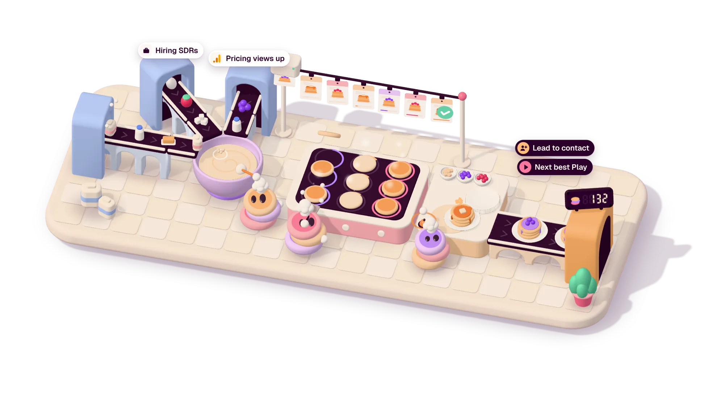

Three belts
Your sources. Ingredients come in all day, from every side.
Pancake Kitchen · review page

The live scene could not start in this browser. This is a still frame of it.
Your sources. Ingredients come in all day, from every side.
Your Plays. A ticket fills as its order cooks, and is stamped when the plate leaves.
Pancake at work. One mixes, one flips, one plates.
Leads, served. The counter adds one for each plate that leaves.
A belt gives way and what it carried ends up on the floor. One belt has been down for days.
Every ingredient waits in one big tank. Change one thing and it loads again from nothing.
Nobody cooks. One mends, one puts fires out, one runs.
One burnt plate leaves now and then, two weeks after the signal that asked for it.
Move the pointer over the scene: the view tilts and the chefs watch it. Click a chef and it jumps.